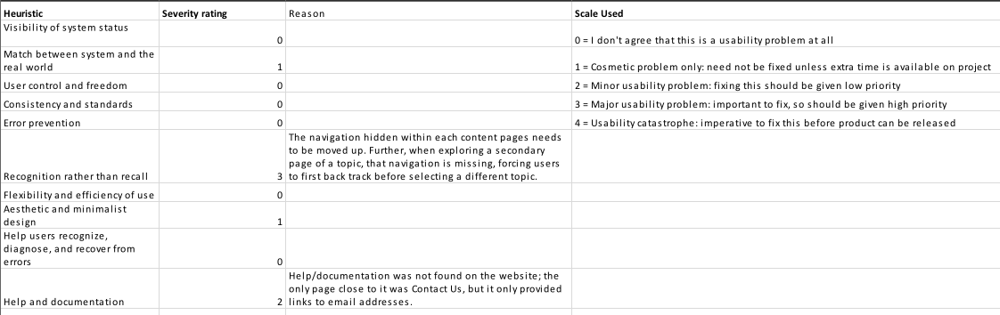
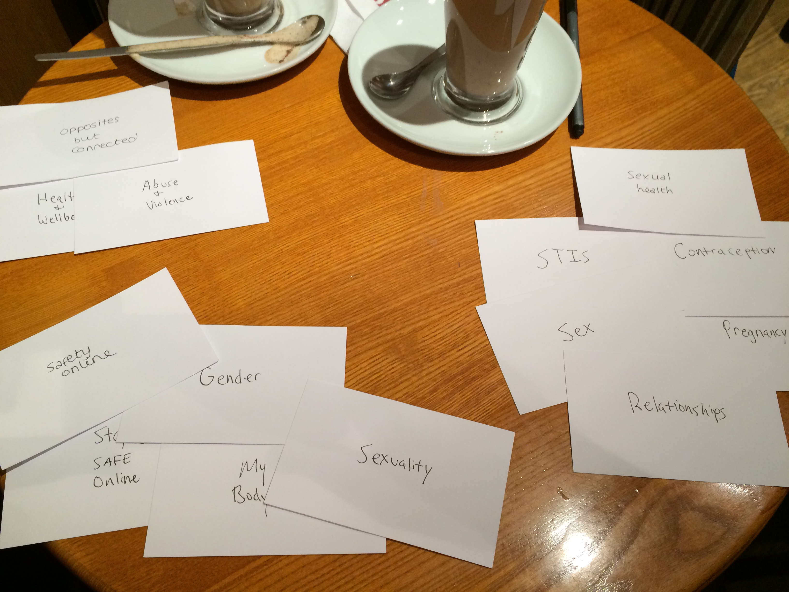
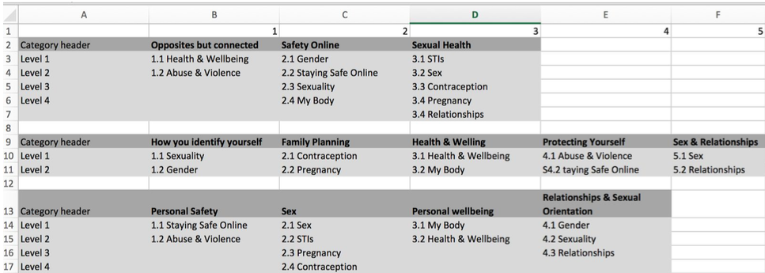

Brook was aware that their website services needed to be redesigned from past research. I chose a part of Brook's
website to identify strengths, weaknesses, and new user requirements to improve their services.
Project outcome
The positives and negatives of the current Brook site were identified, and seven new user requirements were suggested
for the redesign of the website.
My process
Discovery with Brook stakeholder
Heuristic evaluation
Field research
Research synthesis
Sharing user requirements
Discovery with Brook stakeholder
I first needed to determine which part of the Brook website would benefit from a redesign of information. A project stakeholder from the Brook website visited our class to give us a chance to ask questions such as the goals of the project and where they want to improve their services.
This discovery yielded important insights to start exploring for me:
They’re keen to open Brook to a wider target audience besides just the young people (18 - 25)
Brook needs to excel in communicating to young people: niche area
“Your Life” and “Our Services”: two main important sections to Brook
It’s better if they find the information on the website because the web chat is a bit expensive per transaction
Heuristic evaluation
My next step was to assess the current usability of the web content. I did not have access to the website’s Google Analytics (although it was tracking data), so I chose to start with a set of heuristics to establish a baseline.
Jakob Nielsen’s 10 usability heuristics were applied to the My Life section of the website to assess the overall usability. Brook’s website adheres pretty well to all except one usability heuristic: recognition rather than recall in terms of the navigation within the My Life section. This was classified as a major usability problem, and it should have a high priority to fix. The problem is that once a user selects a topic from the dropdown, the menu at the bottom of the content reflects the subpages of that section, but the user cannot easily see the other high level topics.
The other problem is that once in a subsection, and the user clicks on a menu item from the bottom to navigate to another page, that menu at the bottom of the page does not always have the same links. This is incredibly confusing. The user need here is that the user must be able to understand the My Life structure and how each menu item relates to one another. In other words, this section needs to do a better job of showing its hierarchy.

Using Excel to track heuristic findings
Field research
Now that I had a baseline on which to form a hypothesis that the Your Life section of the website is important but probably needs updating. I recruited 3 people within the appropriate age range to conduct semi-structured interviews and then an open-card sort of the content found in the Your Life section of the Brook website.
My interviews with the participants focused on important questions such as:
What do you think about the navigation of the Your Life section?
What do you think this website is about?
How would use this website?
I then conducted a short open card sort exercise with each participant to learn their mental model of how they expect this information to be structured.
After performing an open card sort, the analysis shows that the navigation of Your Life can be improved with information architecture changes. Users grouped the current Your Life categories into new new categories and gave each a name. The outcome was that interviewees created similar category names and had similar cards in each of these categories. This suggests that users think of the Your Life information in this specific way, so the navigation and discovery of that content should be updated accordingly. In other words, the card sort analysis is way to understand the user’s mental model of this website.

Recording a participant's card sort
Research synthesis
Now that I had open card sort data collected as well as interviews transcribed for each participant, I set out to synthesize the information into user requirements for the Brook development team.
There are four main themes that came from the Grounded Theory approach to qualitative data analysis. These are:
Official branding with NHS
The first theme to emerge has to do with trusting official sources. Interviewees mentioned that they would consult other websites for medical advice such as the NHS and WebMD. This does not discredit Brooks website; rather, the credibility of the website can be enhanced if they provided prominent branding or affiliation with recognizable sources. It may be because of their age, but even this audience needs reputable sources that also respect privacy.
Relevant information
This theme identifies the user need for detailed information that aids them in their goals. The interviewees found the information too basic and assumed that most people should already know the information presented. Even younger people appreciate detailed, medical and lifestyle advice. Interviewees dismissed the information and only skimmed it because it was too basic and not informative. Brook should review all of their text and rewrite it.
Guiding process to specific information with discoverable navigation
Interviewees said that the Your Life section had too much text and skimmed over it. They also commented that the navigation menu under the text was not discoverable, looked like too much to read or did not represent further information. Users need this menu moved up in the page to aid them in further discovery of the content they need. If they can find what they need, then having too much text may become less relevant because they should be interested in what they’re reading.
Shop and Ask Brook 24/7 confusion
This theme was not considered as something to explore during the phase of preparing interviews; however, both of these came up in every interview, and it’s fascinating. As interviewees were exploring the website, both of these services caught their attention. They were confused as to why their was a shop on a sexual health website. They weren’t sure if it would sell contraceptives method. However, they started exploring it, they realized that the website had two audiences: young adults and the people who educated them. They saw the shop as only for the educators. A user requirement is that the Brook website needs to be more explicit how which service is for which audience.

Synthesizing card sort data
Sharing user requirements with Brook
Users need more trust in the Brook website. Websites like NHS and WebMD were mentioned as places for official information,
so Brook should think about providing a way to show that information is medically valid or reviewed.
Users need the the shop section better defined. When interviewees visited the shop, it took them some time to understand
the material available was mostly for educators and not for young adults.
Similar to (2), interviewees did not at first realize that Brook caters to at least two audiences. Users need Brook to
make a better distinction between information meant for young adults and information meant for another audience.
Users need information that is relevant, of the appropriate length, and that offers downloads of further information.
Specifically, the length of the text was mentioned by all interviewees. They said that they probably would not read
all of it. They just wanted to find the specific topic in which they were interested.
Every interviewee had the wrong interpretation of the A sk Brook 24/7 service until they actually used it. Predictability,
the name of the feature led participants to believe it was a live chat service. After they used the feature, they
were confused as to why it was in the main navigation and not within the Y our Life section. Further, they were confused
as to why it was given that name. Users must understand that this is actually an information finding tool. They said
it was helpful, but only after they realized what it did. It is suggested to integrate this feature into the Y our
Life section.
The navigation section at the bottom of every Y our Life section was missed by interviewees or interpreted as something
else. One interviewee stated: “I probably wouldn't have clicked on that. It looks like a site map.” Users need the
Y our Life to support navigation that is discoverable and provide options for sorting/selection. The navigation should
suggest an order in which to move through the content, so that users can easily browse or be guided to what they
need. See F igure 2 for the results of an open card sort.
Interviewees found the information in Y our Life too basic. Users need detailed, medical and lifestyle advice in order
to make important decisions. Brook should consider a content inventory and analysis of the Your Life section.